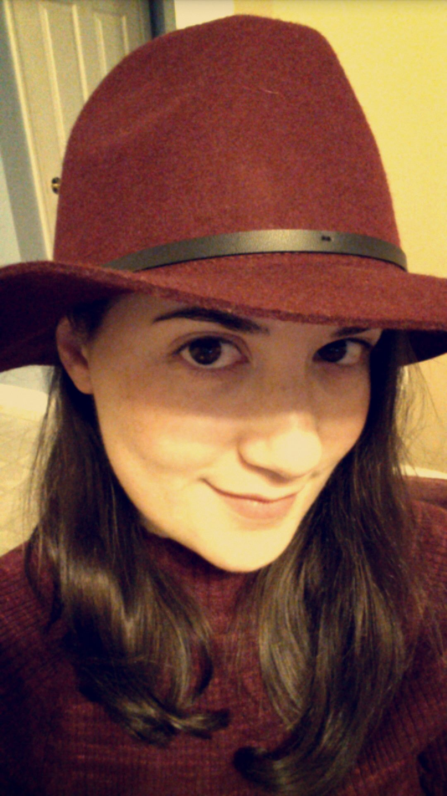

ABOUT PRECARIOUS PIPING
Welcome to Precarious Piping! We are Lisha and Amanda, college students and unexperienced decorators of sweet treats. Join us in our journey to decorating excellence, and laugh at our fails along the way! We’ll pass on tips on what to do—and what not to do—to decorate beautiful cakes, cookies, and other desserts. Much of what we’ve learned comes from our research of what other bloggers and YouTubers have done before us, although the fails are all our own.
We started this site as part of an assignment for a class, although our decorating history goes back to when we were much younger. Read on to learn more about each of us, and visit our blog posts to learn more about our baking and decorating histories!
Lisha
Hi, I’m Lisha. I’m a Professional & Technical writing major, but in my spare time I love looking at Pinterest. I can bake well, but when it comes to decorating…well. You’ll just have to see the pictures!
Amanda
Hi, I’m Amanda! I’m a Professional & Technical/Creative writing double major who grew up hanging out in the kitchen with my mom. I have a definite artistic streak, but when I try a project that requires special techniques, the project definitely has the potential to be a disaster!
Contact Us
precariouspiping.fakeemail@gmail.com